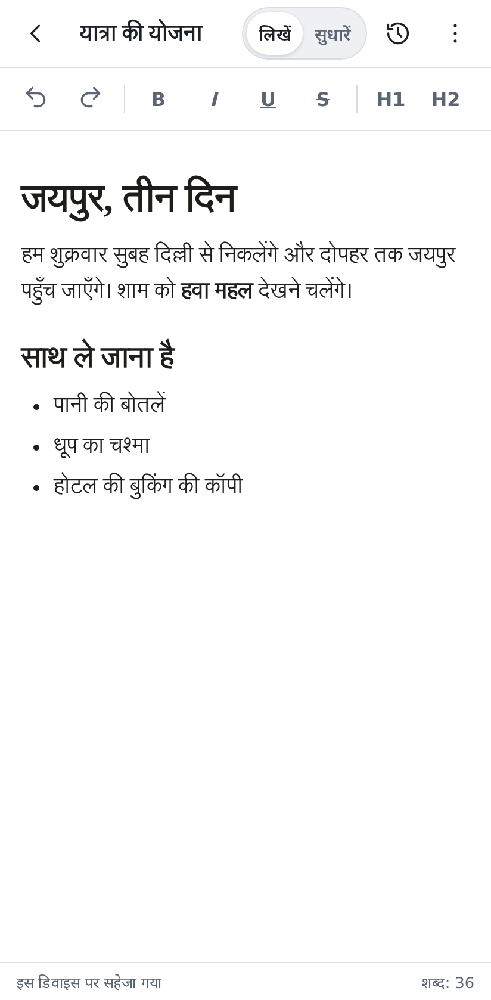
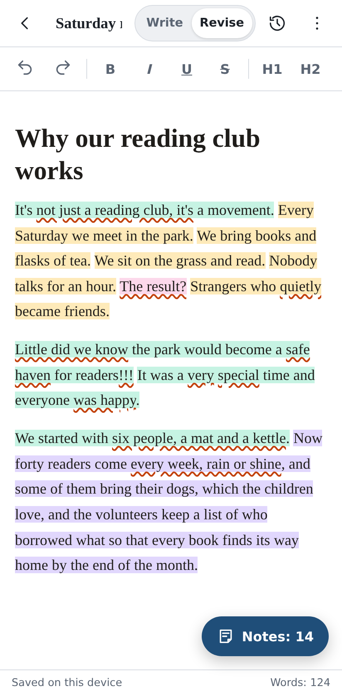
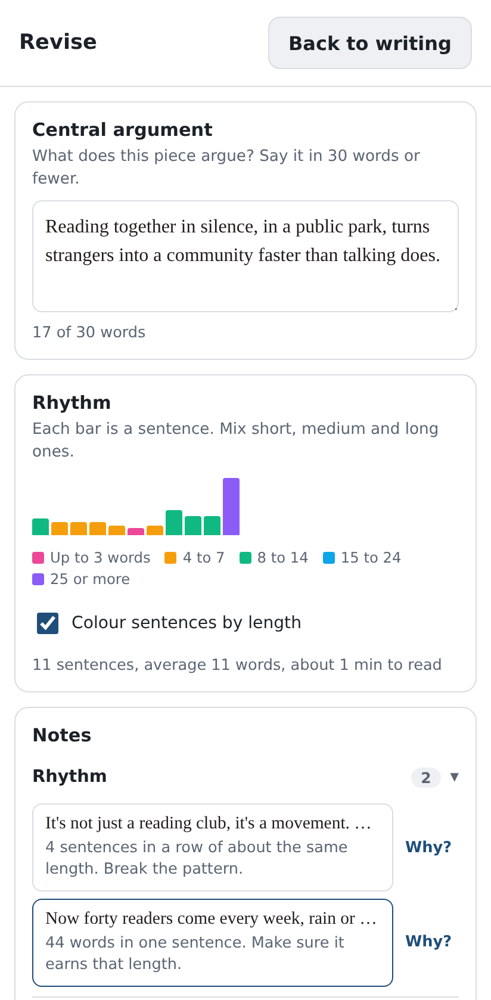
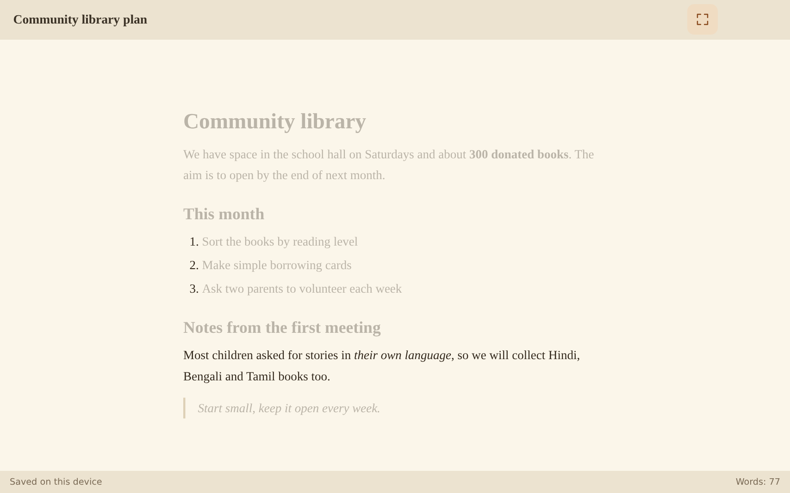

Write a draft, then revise it until it says what you mean.
Inkstand is a quiet place to write. Get the first draft down without distractions, then switch to Revise and see how the piece actually reads.
Start writing
Inkstand is a quiet place to write. Get the first draft down without distractions, then switch to Revise and see how the piece actually reads.
Start writing
A blank page with a few formatting buttons and nothing else. No notes, no suggestions, no score. The only job here is getting the whole draft down.
On a tablet or computer, Focus dims every paragraph except the one you're on.
Inkstand reads the draft and leaves notes. Every sentence is coloured by its length, so a run of sentences that all sound the same is easy to spot.
A box asks for your central argument in 30 words or fewer. The notes point out clichés, feelings you told instead of showed, vague words, punctuation slips, and the habits that make writing sound machine-made, like "It's not X, it's Y."
Tap a note to jump to the words. "Why?" opens a short craft guide, and there's a practice sheet with exercises to warm up on.



Stay in Write until the whole piece is down, even if it's rough. Fixing sentences you might delete later is wasted effort.
Fill in the central argument box before reading the notes. If it won't fit in 30 words, the draft probably wanders too, and that's the first thing to fix.
A long stretch of one colour means sentences of the same length, and the prose will feel flat. Split one long sentence or join two short ones.
Every note is something to look at again, not an error. If you meant it, keep it. The notes come from plain rules, not from an AI.
Turn on Focus to dim everything but the paragraph you're writing. Press Esc to leave it.
Press Ctrl+S (⌘+S on a Mac) to keep a version. Inkstand also keeps one when you switch documents or leave the page. Version history lets you go back.
Your documents live in this browser on this device. Clearing the browser's site data deletes them, so export anything you care about to Word, a web page or plain text.
Open Inkstand, then in Chrome on Android, or Safari on iPhone and iPad, choose Add to Home screen. Inkstand then opens like an app, with or without a connection.
The interface opens in your device's language when it can, and you can change it in Settings.
English · हिन्दी · বাংলা · मराठी · தமிழ் · తెలుగు · ગુજરાતી · ಕನ್ನಡ · മലയാളം · ਪੰਜਾਬੀ
Rhythm and punctuation notes work in all of them, the Hindi danda included. The word-level notes read English for now.

Open it, start typing, and switch to Revise when the draft is done.
Start writing